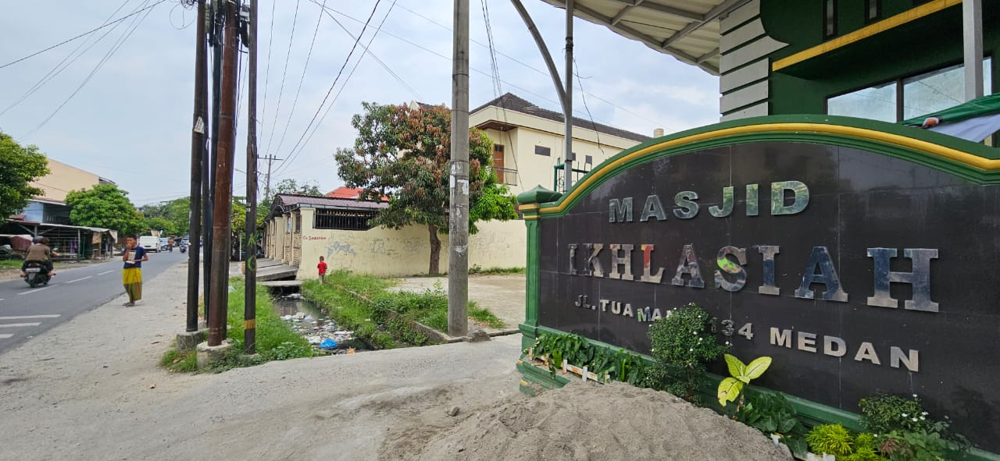
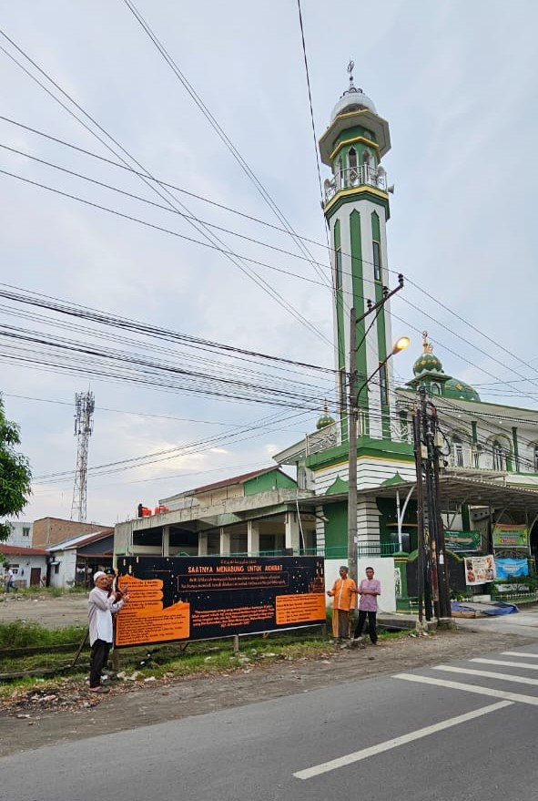
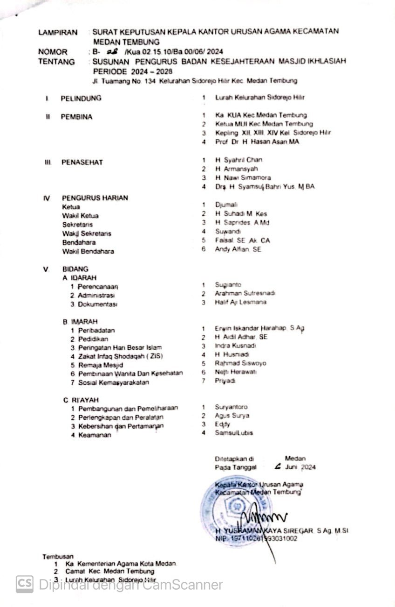
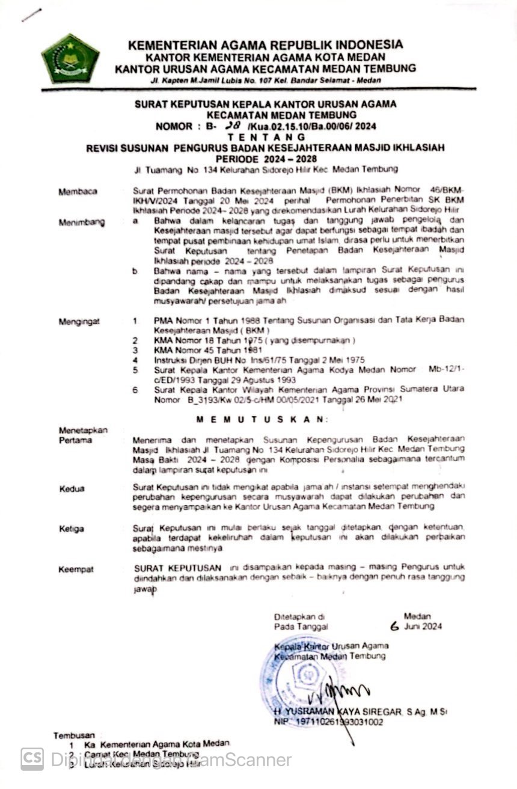
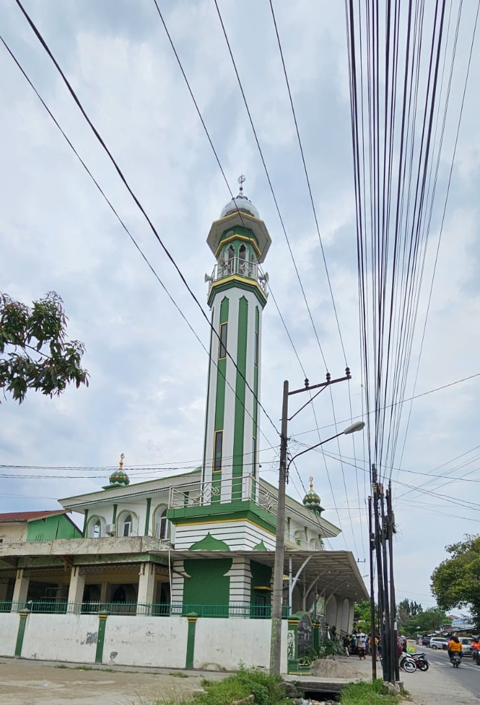
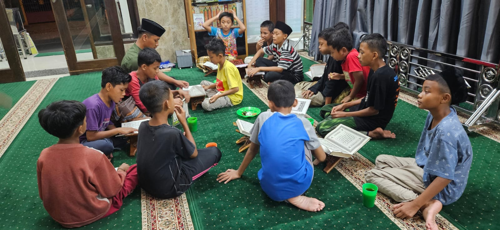
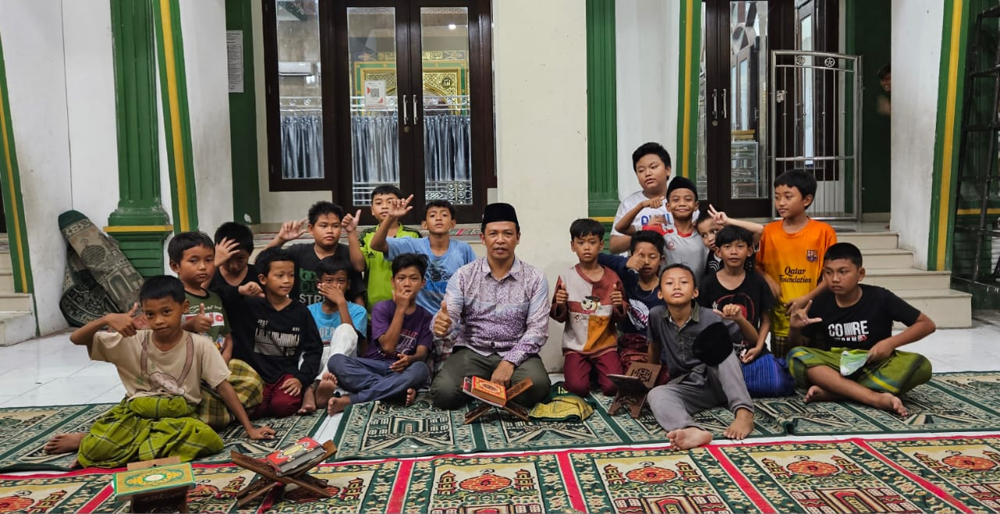
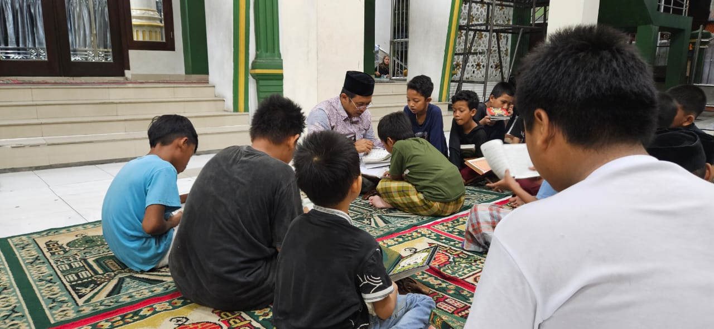
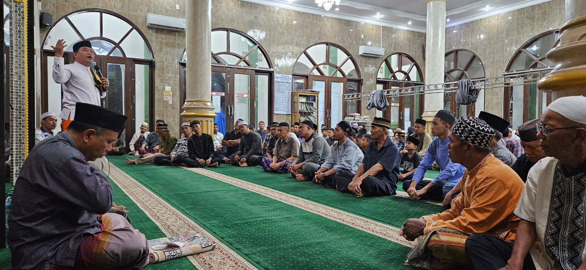

Selamat datang
Masjid Ikhlasiah
Website resmi Masjid Ikhlasiah dan BKM Ikhlasiah sebagai ruang informasi kegiatan, pengurus, program wakaf, galeri, dan layanan jamaah.




BKM Ikhlasiah
Masjid yang hidup bersama jamaahnya
Masjid Ikhlasiah menjadi tempat ibadah, musyawarah, pendidikan Al-Qur'an, dan penguatan kepedulian sosial bagi masyarakat sekitar Jalan Tuamang Medan.
Layanan Jamaah
Informasi utama
Akses cepat untuk mengenal kegiatan dan pelayanan Masjid Ikhlasiah.
Ibadah dan Pembinaan
Mendukung kegiatan ibadah rutin, pengajian, dan pembinaan anak serta remaja.
Program Wakaf
Mengajak jamaah berpartisipasi dalam program kebaikan dan pengembangan fasilitas masjid.
Kepengurusan BKM
Informasi struktur pengurus agar komunikasi jamaah dengan BKM semakin mudah.

Program BKM
Saatnya menabung untuk akhirat
BKM Ikhlasiah mengajak kaum muslimin menyisihkan sebagian harta untuk mendukung pembelian tanah di sisi kanan masjid. Program ini diniatkan sebagai amal jariyah dan penguatan fasilitas ibadah jamaah.
Perumpamaan orang yang menginfakkan hartanya di jalan Allah seperti sebutir biji yang menumbuhkan tujuh tangkai. QS. Al-Baqarah: 261Lihat Program
Galeri
Dokumentasi kegiatan

Kegiatan Mengaji
Pembinaan bacaan Al-Qur'an untuk anak-anak dan remaja sekitar masjid.

Kebersamaan Jamaah
Kegiatan jamaah yang memperkuat ukhuwah dan kepedulian sosial.

Pembinaan Remaja
Ruang belajar dan berkhidmat bagi generasi muda Masjid Ikhlasiah.

Kegiatan BKM
Dokumentasi kegiatan pengurus bersama masyarakat sekitar.